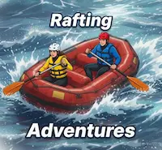
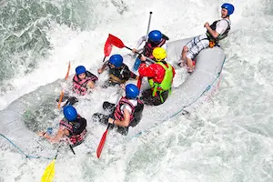
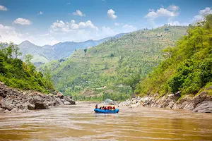
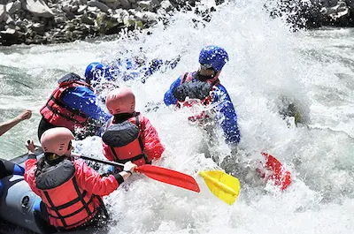
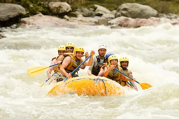
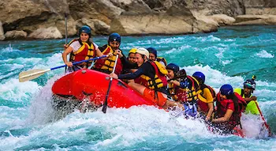

"I had the greatest time rafting the Sandy Falls Rapids. It was the perfect mixture of awe inspiring nature, heart pounding challenges, & constant fluctuations between calm & chaos."" - Emile Moosman


"I had the greatest time rafting the Sandy Falls Rapids. It was the perfect mixture of awe inspiring nature, heart pounding challenges, & constant fluctuations between calm & chaos."" - Emile Moosman

In 1977 a small family team launched Rafting Adventures, driven by pure love of wild water. Today that same spirit lives on as we guide thousands of guests each year through unforgettable whitewater journeys.
Adrenaline and beauty meet on every trip. You paddle hard, get drenched in the spray, share laughs with your crew, then step off the raft tired, smiling, and already craving the next rapid.




